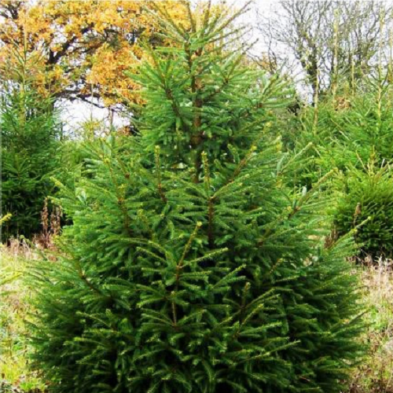

Świerk pospolity (Picea abies (L.) H.Karst) – gatunek drzewa z rodziny sosnowatych (Pinaceae). Jest to jedyny gatunek świerka występujący naturalnie w Polsce. Rośnie głównie w północno-wschodniej części kraju, na południu Polski, w górach i na pogórzu.
Świerk pospolity jest ważnym źródłem lekkiego, miękkiego drewna o przyjemnym, jasnożółtawym zabarwieniu. Używany jest do pozyskiwania celulozy oraz w budownictwie.
W ofercie mamy choinki o wysoksci:
od 40cm do 200cm i cenie w